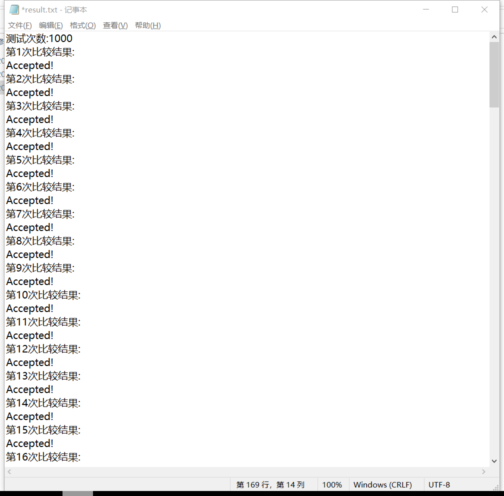
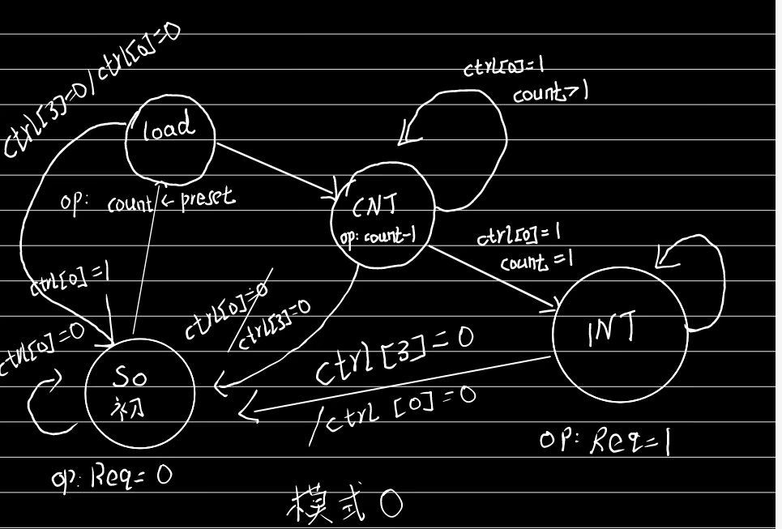
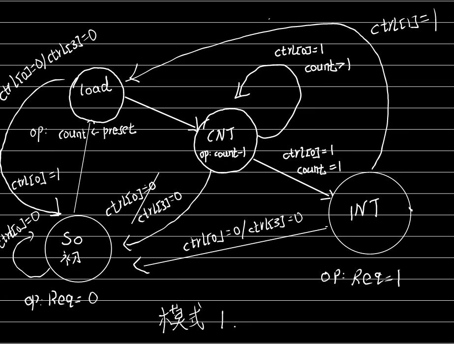
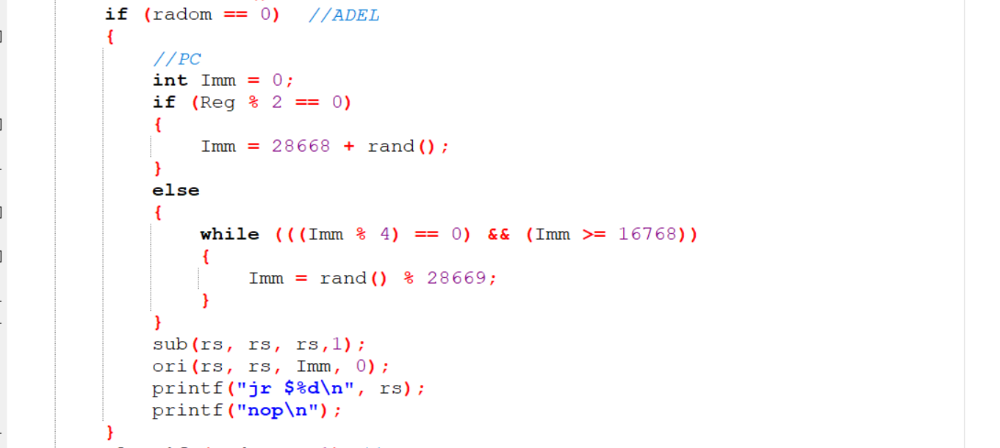
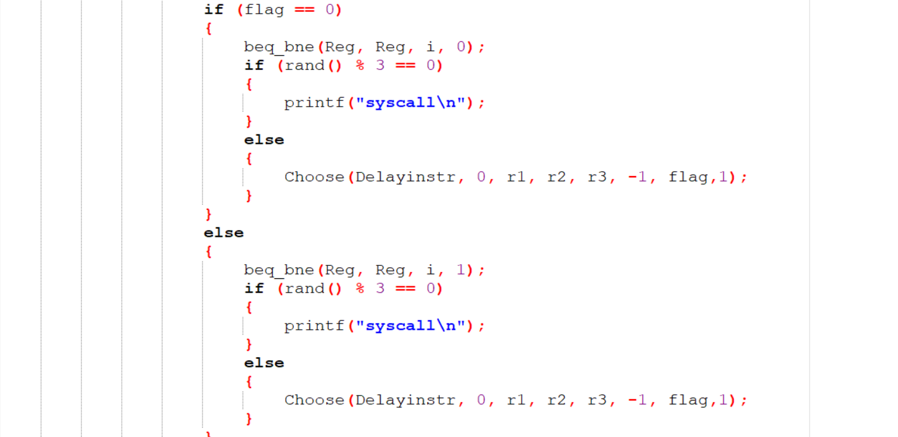
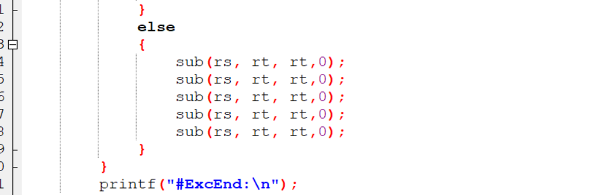
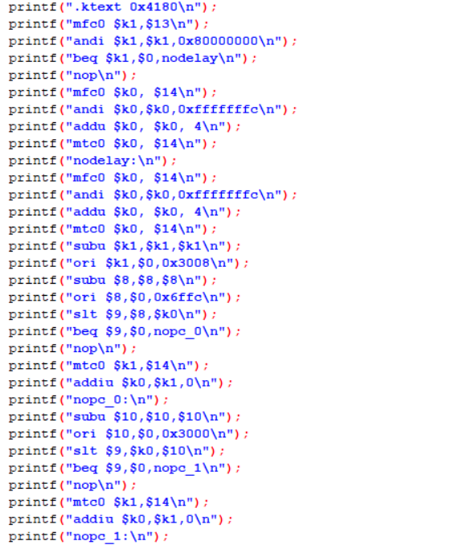

中断支持流水线CPU设计文档（Verilog）
CPU设计方案综述
总体设计综述
使用Verilog开发一个流水线CPU,总体概述如下：
1.此流水线CPU为32位CPU
2.此CPU为流水线设计
3.此CPU支持的指令集为:{add,sub,and,or,slt,sltu,addi,andi,ori,lb,lh,lw,sb,sh,sw,mult,multu,div,divu,mfhi,mflo,mthi,mtlo,beq,bne,lui,jal,jr,nop,mtc0,mfc0,syscall}
4.nop的机器码为0x0000000
5.该CPU支持对来自计数器和外部的中断进行处理
6，该CPU支持对于部分异常进行处理，例如字不对齐，存取位置异常，溢出异常等
关键模块定义
IM(外置)
（1）端口说明
| 序号 | 信号名 | 方向 | 描述 |
|---|---|---|---|
| 1 | i_inst_addr[31:0] | I | 需要进行取指操作的流水级 PC（一般为 F 级） |
| 2 | i_inst_rdata[31:0] | I | i_inst_addr 对应的 32 位指令 |
| 3 | reset | I | 复位信号 |
| 4 | clk | I | 时钟信号 |
（2）功能定义
| 序号 | 功能 | 描述 |
|---|---|---|
| 1 | 取指 | 利用PC取出对应位置处的指令 |
F_PC
（1）端口说明
| 序号 | 信号名 | 方向 | 描述 |
|---|---|---|---|
| 1 | NPC[31:0] | I | 下一个PC值 |
| 2 | CLK | I | 时钟信号 |
| 3 | RESET | I | 复位信号 |
| 4 | PC[31:0] | O | 当前PC值 |
（2）功能定义
| 序号 | 功能 | 描述 |
|---|---|---|
| 1 | 更改PC值 | 利用NPC更改PC值 |
D_GRF
（1）端口说明
| 序号 | 信号名 | 方向 | 描述 |
|---|---|---|---|
| 1 | A1[4:0] | I | 5位地址输入信号，指定32个寄存器中的一个，将其中存储的数据读出到RD1 |
| 2 | A2[4:0] | I | 5位地址输入信号，指定32个寄存器中的一个，将其中存储的数据读出到RD2 |
| 3 | A3[4:0] | I | 5位地址输入信号，指定32个寄存器中的一个，将其作为RD的写入地址 |
| 4 | WD[31:0] | I | 32位写入数据 |
| 5 | PC[31:0] | I | 当前PC值 |
| 6 | RD1[31:0] | O | A1指定寄存器的32位数据 |
| 7 | RD2[31:0] | O | A2指定寄存器的32位数据 |
| 8 | CLK | I | 时钟信号 |
| 9 | WE | I | 写使能信号 |
| 10 | RESET | I | 同步复位信号，清零32个寄存器中的数据 |
(2)功能定义
| 序号 | 功能 | 描述 |
|---|---|---|
| 1 | 同步复位 | 时钟上升沿到来时，若RESET信号有效，则将32个寄存器中的数据全部清除 |
| 2 | 读出数据 | 将A1与A2所存地址对应的寄存器的数据读出到RD1和RD2 |
| 3 | 写入数据 | 当WE有效且时钟上升沿到来时，将WD写入到A3所存地址对应的寄存器中 |
| 4 | 转发数据 | 当A3\==A2或A3\==A1且WE有效，A3!=0时，将WD中的数据作为RD1或RD2的输出 |
IF_ID_REG
（1）端口说明
| 序号 | 信号名 | 方向 | 描述 |
|---|---|---|---|
| 1 | clk | I | 时钟信号 |
| 2 | reset | I | 同步复位信号 |
| 3 | WE | I | 写使能信号 |
| 4 | IF_Instr[31:0] | I | IF阶段机器码 |
| 5 | IF_PC[31:0] | I | IF阶段PC值 |
| 6 | ID_Instr[31:0] | O | ID阶段机器码 |
| 7 | ID_PC[31:0] | O | ID阶段PC值 |
(2)功能定义
| 序号 | 功能 | 描述 |
|---|---|---|
| 1 | 记忆功能 | ID阶段存储执行命令所需要的所有内容 |
Control
（1）端口说明
| 序号 | 信号名 | 方向 | 描述 |
|---|---|---|---|
| 1 | Instr[31:0] | I | 当前指令 |
| 3 | ExtendSign | O | 扩展类型信号 |
| 4 | Jal_sign | O | 跳转信号 |
| 5 | RegWrite | O | 寄存器写使能信号 |
| 6 | MemWrite | O | DM写使能信号 |
| 7 | MemToReg[2:0] | O | Reg写入数据类型信号 |
| 8 | RegDest[4:0] | O | A3寄存器选择信号 |
| 9 | ALUop[3:0] | O | ALU功能选择信号 |
| 10 | Beq_sign | O | 分支信号 |
| 11 | Jr_sign | O | Jr信号 |
| 12 | RegSrc | O | ALU数据来源选择信号 |
| 13 | imm16[15:0] | O | 16位立即数 |
| 14 | imm26[25:0] | O | 26位立即数 |
| 15 | rs[4:0] | O | rs寄存器编号 |
| 16 | rt[4:0] | O | rt寄存器编号 |
| 17 | rd[4:0] | O | rd寄存器编号 |
| 18 | load | O | 是否为lw指令 |
| 19 | store | O | 是否为sw指令 |
| 20 | cal_r | O | 是否为cal_r类指令 |
| 21 | cal_i | O | 是否为cal_i类指令 |
| 22 | jal | O | 是否为jal指令 |
(2)真值表
| 端口 | add | sub | ori | lw | sw | lui | beq | Jal | Jr |
|---|---|---|---|---|---|---|---|---|---|
| OP | 000000 | 000000 | 001101 | 100011 | 101011 | 001111 | 000100 | 000011 | 000000 |
| FC | 100000 | 100010 | x | x | x | x | x | x | 001000 |
| ALUop | 0000 | 0001 | 0011 | 0000 | 0000 | 0100 | 0000 | 0000 | 0000 |
| Jump | 0 | 0 | 0 | 0 | 0 | 0 | 0 | 1 | 0 |
| RegWrite | 1 | 1 | 1 | 1 | 0 | 1 | 0 | 1 | 0 |
| MemWrite | 0 | 0 | 0 | 0 | 1 | 0 | 0 | 0 | 0 |
| MemToReg | 00 | 00 | 00 | 01 | 00 | 00 | 00 | 10 | 00 |
| RegDest | 01 | 01 | 00 | 00 | 00 | 00 | 00 | 10 | 00 |
| RegSrc | 0 | 0 | 1 | 1 | 1 | 1 | 0 | 0 | 0 |
| Branch | 0 | 0 | 0 | 0 | 0 | 0 | 1 | 0 | 0 |
| Jreg | 0 | 0 | 0 | 0 | 0 | 0 | 0 | 0 | 1 |
D_CMP
（1）端口说明
| 序号 | 信号名 | 方向 | 描述 |
|---|---|---|---|
| 1 | A[31:0] | I | 操作数A |
| 2 | B[31:0] | I | 操作数B |
| 3 | Equal | O | A==B？1：0 |
(2)功能定义
| 序号 | 功能 | 描述 |
|---|---|---|
| 1 | 比较 | 比较操作数A与B是否相等，相等则Equal有效 |
D_NPC
（1）端口说明
| 序号 | 信号名 | 方向 | 描述 |
|---|---|---|---|
| 1 | F_PC[31:0] | I | IF阶段的PC值 |
| 2 | D_PC[31:0] | I | ID阶段的PC值 |
| 3 | Beq_sign | I | 是否为Beq指令 |
| 4 | Jal_sign | I | 是否为Jal指令 |
| 5 | Jr_sign | I | 是否为Jr指令 |
| 6 | Jal_imm26[25:0] | I | 26位立即数 |
| 7 | D_GRF_Jr[31:0] | I | Jr目标寄存器数据 |
| 8 | Beq_imm16[15:0] | I | 16位立即数 |
| 9 | Equal | I | D_CMP两操作数是否相等 |
| 10 | NPC[31:0] | O | PC的下一值 |
(2)功能定义
| 序号 | 功能 | 描述 |
|---|---|---|
| 1 | 计算下一PC的值 | 根据指令和当前PC值计算下一PC值 |
D_EXT
（1）端口说明
| 序号 | 信号名 | 方向 | 描述 |
|---|---|---|---|
| 1 | i16[15:0] | I | 16位立即数 |
| 2 | i32[31:0] | O | 经过扩展后的32位立即数 |
| 3 | ExtendSign | I | 选择扩展类型信号 0：符号扩展 1：无符号扩展 |
(2)功能定义
| 序号 | 功能 | 描述 |
|---|---|---|
| 1 | 符号扩展 | 将16位立即数符号扩展为32位立即数 |
| 2 | 无符号扩展 | 将16位立即数无符号扩展为32位立即数 |
ID_EX_REG
（1）端口说明
| 序号 | 信号名 | 方向 | 描述 |
|---|---|---|---|
| 1 | ID_Instr[31:0] | I | ID阶段机器码 |
| 2 | D_RD1[31:0] | I | ID阶段有效数据 |
| 3 | D_RD2[31:0] | I | ID阶段有效数据 |
| 4 | D_imm32[31:0] | I | ID阶段32位立即数 |
| 5 | ID_PC[31:0] | I | ID阶段PC值 |
| 6 | clk | I | 时钟信号 |
| 7 | reset | I | 复位信号 |
| 8 | WE | I | 写使能信号 |
| 9 | EX_Instr[31:0] | O | EX阶段机器码 |
| 10 | EX_RD1[31:0] | O | EX阶段有效数据 |
| 11 | EX_RD2[31:0] | O | EX阶段有效数据 |
| 12 | EX_imm32[31:0] | O | EX阶段32位立即数 |
| 13 | EX_PC[31:0] | O | EX阶段PC值 |
(2)功能定义
| 序号 | 功能 | 描述 |
|---|---|---|
| 1 | 记忆功能 | EX阶段存储执行命令所需要的所有内容 |
E_ALU
（1）端口说明
| 序号 | 信号名 | 方向 | 描述 |
|---|---|---|---|
| 1 | SrcA[31:0] | I | 操作数1 |
| 2 | SrcB[31:0] | I | 操作数2 |
| 3 | ALUControl[3:0] | I | ALU功能选择信号 |
| 5 | Res[31:0] | O | 运算结果 |
(2)功能定义
| 序号 | 功能 | 描述 |
|---|---|---|
| 1 | 判断两个操作数是否相等 | 相等则Bigger输出1否则为0 |
| 2 | 加运算 | res=SrcA+SrcB |
| 3 | 减运算 | res=SrcA-SrcB |
| 4 | 与运算 | res=SrcA$SrcB |
| 5 | 或运算 | res=SrcB或SrcB |
| 6 | 加载高位运算 | res={SrcB[15:0],16’h0} |
E_MDU
（1）端口说明
| 序号 | 信号名 | 方向 | 描述 |
|---|---|---|---|
| 1 | clk | I | 时钟信号 |
| 2 | reset | I | 复位信号 |
| 3 | SrcA[31:0] | I | 操作数A |
| 4 | SrcB[31:0] | I | 操作数B |
| 5 | start | I | 开始信号 |
| 6 | MDUop[2:0] | I | MDU功能选择信号 |
| 7 | HIWrite | I | HI寄存器写使能信号 |
| 8 | LOWrite | I | LO寄存器写使能信号 |
| 9 | HIRead | I | 读HI寄存器信号 |
| 10 | LORead | I | 读LO寄存器信号 |
| 11 | HI[31:0] | O | HI寄存器 |
| 12 | LO[31:0] | O | LO寄存器 |
| 13 | busy | O | MDU模块忙信号 |
| 14 | MDU_res[31:0] | O | MDU结果信号 |
(2)功能定义
| 序号 | 功能 | 描述 |
|---|---|---|
| 1 | 无符号乘 | {HI_temp,LO_temp} = SrcA * SrcB |
| 2 | 符号乘 | {HI_temp,LO_temp} = $signed(SrcA) * $signed(SrcB) |
| 3 | 符号除 | HI = $signed(SrcA) % $signed(SrcB) |
| 3 | 符号除 | LO = $signed(SrcA) \ $signed(SrcB) |
| 4 | 无符号除 | HI = SrcA % SrcB |
| 4 | 无符号除 | LO = SrcA \ SrcB |
| 5 | 读写HI寄存器 | mfhi读，mthi写 |
| 6 | 读写LO寄存器 | mflo读，mflo写 |
EX_MEM_REG
（1）端口说明
| 序号 | 信号名 | 方向 | 描述 |
|---|---|---|---|
| 1 | EX_Instr[31:0] | I | EX阶段机器码 |
| 2 | E_ALU_Result[31:0] | I | EX阶段ALU结果数据 |
| 3 | EX_RD2[31:0] | I | EX阶段有效数据 |
| 4 | EX_PC[31:0] | I | EX阶段PC值 |
| 5 | clk | I | 时钟信号 |
| 6 | reset | I | 复位信号 |
| 7 | WE | I | 写使能信号 |
| 8 | MEM_Instr[31:0] | O | MEM阶段机器码 |
| 9 | MEM_ALU_Result[31:0] | O | MEM阶段ALU结果数据 |
| 10 | MEM_RD2[31:0] | O | MEM阶段有效数据 |
| 11 | MEM_PC[31:0] | O | MEM阶段PC值 |
(2)功能定义
| 序号 | 功能 | 描述 |
|---|---|---|
| 1 | 记忆功能 | MEM阶段存储执行命令所需要的所有内容 |
DM（外置）
（1）端口说明
| 序号 | 信号名 | 方向 | 描述 |
|---|---|---|---|
| 1 | m_data_addr[31:0] | I | 32位地址输入 |
| 2 | m_data_rdata[31:0] | O | 32位数据输出 |
| 3 | m_data_wdata[31:0] | I | 32位数据输入 |
| 4 | m_inst_addr[31:0] | I | M级PC值 |
| 5 | RESET | I | 同步复位信号 |
| 6 | CLK | I | 时钟信号 |
| 7 | m_inst_byteen[3:0] | I | 字节使能信号 |
(2)功能定义
| 序号 | 功能 | 描述 |
|---|---|---|
| 1 | 写入数据 | 当时钟上升沿到来时，根据字节使能信号中的有效位将WD中的数据写入到A所存地址所对应的位处 |
| 2 | 读出数据 | 将A所存地址对应位置的数据读出到RD |
M_CP0
（1）端口说明
| 序号 | 信号名 | 方向 | 描述 |
|---|---|---|---|
| 1 | clk | I | 时钟信号 |
| 2 | reset | I | 同步复位信号 |
| 3 | en | I | 写使能信号 |
| 4 | CP0Add[4:0] | I | 寄存器选择信号 |
| 5 | CP0In[31:0] | I | 读入数据 |
| 6 | CP0Out[31:0] | O | 读出数据 |
| 7 | VPC[31:0] | I | 受害PC |
| 8 | BDIn | I | 延迟槽指令信号 |
| 9 | ExcCodeIn[4:0] | I | 异常类型 |
| 10 | HWInt[5:0] | I | 中断信号输入 |
| 11 | EXLClr | I | EXL复位信号 |
| 12 | EPCOut[31:0] | O | EPC值 |
| 13 | Req | O | 进入处理程序请求 |
(2)功能定义
| 序号 | 功能 | 描述 |
|---|---|---|
| 1 | 配置异常 | 根据EXL Cause SR信号不同位决定中断能否产生 |
| 2 | 记录异常 | 利用SR Cause EPC记录异常信息 |
M_BE
（1）端口说明
| 序号 | 信号名 | 方向 | 描述 |
|---|---|---|---|
| 1 | A[1:0] | I | DM地址的低两位 |
| 2 | Din[31:0] | I | DM读出数据 |
| 3 | Op[2:0] | I | BE功能选择 |
| 4 | Dout[31:0] | O | BE数据输出 |
(2)功能定义
| 序号 | 功能 | 描述 |
|---|---|---|
| 1 | 处理DM数据 | 根据A和OP处理数据，使其符合指令行为 |
MEM_WB_REG
（1）端口说明
| 序号 | 信号名 | 方向 | 描述 |
|---|---|---|---|
| 1 | MEM_Instr[31:0] | I | MEM阶段机器码 |
| 2 | MEM_ALU_Result[31:0] | I | MEM阶段ALU结果数据 |
| 3 | MEM_DM_RD[31:0] | I | MEM阶段DM读出数据 |
| 4 | MEM_PC[31:0] | I | MEM阶段PC值 |
| 5 | clk | I | 时钟信号 |
| 6 | reset | I | 复位信号 |
| 7 | WE | I | 写使能信号 |
| 8 | WB_Instr[31:0] | O | WB阶段机器码 |
| 9 | WB_ALU_Result[31:0] | O | WB阶段ALU结果数据 |
| 10 | WB_DM_RD[31:0] | O | WB阶段DM读出数据 |
| 11 | WB_PC[31:0] | O | WB阶段PC值 |
(2)功能定义
| 序号 | 功能 | 描述 |
|---|---|---|
| 1 | 记忆功能 | WB阶段存储执行命令所需要的所有内容 |
Stall
（1）端口说明
| 序号 | 信号名 | 方向 | 描述 |
|---|---|---|---|
| 1 | D_Instr[31:0] | I | ID阶段机器码 |
| 2 | E_Instr[31:0] | I | EX阶段机器码 |
| 3 | M_Instr[31:0] | I | MEM阶段机器码 |
| 4 | Stall | O | 阻塞信号 |
(2)功能定义
| 序号 | 功能 | 描述 |
|---|---|---|
| 1 | 阻塞功能 | 判断当前流水线是否需要在ID阶段阻塞 |
(3)判断方法——AT法
| 指令 | rsTuse | rtTuse |
|---|---|---|
| add | 1 | 1 |
| sub | 1 | 1 |
| and | 1 | 1 |
| or | 1 | 1 |
| slt | 1 | 1 |
| sltu | 1 | 1 |
| addi | 1 | - |
| andi | 1 | - |
| ori | 1 | - |
| lb | 1 | - |
| lh | 1 | - |
| lw | 1 | - |
| sb | 1 | 2 |
| sh | 1 | 2 |
| sw | 1 | 2 |
| beq | 0 | 0 |
| bne | 0 | 0 |
| mult | 1 | 1 |
| multu | 1 | 1 |
| div | 1 | 1 |
| divu | 1 | 1 |
| mthi | 1 | - |
| mtlo | 1 | - |
| lui | - | - |
| jal | - | - |
| jr | 0 | - |
| mtc0 | 2 | 0 |
| 指令 | E_Tnew | M_Tnew |
|---|---|---|
| add | 1 | 0 |
| sub | 1 | 0 |
| and | 1 | 0 |
| or | 1 | 0 |
| slt | 1 | 0 |
| sltu | 1 | 0 |
| addi | 1 | 0 |
| andi | 1 | 0 |
| ori | 1 | 0 |
| lh | 2 | 1 |
| lb | 2 | 1 |
| lw | 2 | 1 |
| sw | - | - |
| sh | - | - |
| sb | - | - |
| mfhi | 1 | 0 |
| mflo | 1 | 0 |
| bne | - | - |
| beq | - | - |
| lui | 1 | 0 |
| jal | 0 | 0 |
| jr | - | - |
| mfc0 | 2 | 1 |
特殊
Stall_eret = (D_eret) && ((E_mtc0 && E_rd == 5'd14) || (M_mtc0 && M_rd == 5'd14));
Forward
（1）端口说明
| 序号 | 信号名 | 方向 | 描述 |
|---|---|---|---|
| 1 | E_Instr[31:0] | I | EX阶段机器码 |
| 2 | M_Instr[31:0] | I | MEM阶段机器码 |
| 3 | W_Instr[31:0] | I | WB阶段机器码 |
| 4 | EX_Forward | O | EX阶段数据是否可以转发信号 |
| 5 | MEM_Forward | O | MEM阶段数据是否可以转发信号 |
| 6 | WB_Forward | O | WB阶段数据是否可以转发信号 |
（2）功能定义
| 序号 | 功能 | 描述 |
|---|---|---|
| 1 | 转发信号 | 判断每个阶段是否可以为前面转发数据 |
Bridge
(1）端口说明
| 序号 | 信号名 | 方向 | 描述 |
|---|---|---|---|
| 1 | PrAddr[31:0] | I | CPU地址输入 |
| 2 | PrRD[31:0] | O | 读出到CPU的数据 |
| 3 | PrWD[31:0] | I | 读入到外设的数据 |
| 4 | DevAddr[31:0] | O | 外设地址 |
| 5 | DevWD[31:0] | O | 输出到外设的数据 |
| 6 | TC1_RD[31:0] | I | 来自TC1的数据 |
| 7 | TC2_RD[31:0] | I | 来自TC2的数据 |
| 8 | DM_RD[31:0] | I | 来自DM的数据 |
| 9 | PrWe | I | 桥写使能信号 |
| 10 | TC1_WE | O | TC1写使能信号 |
| 11 | TC2_WE | O | TC2写使能信号 |
| 12 | DM_WE | O | DM写使能信号 |
(2)功能定义
| 序号 | 功能 | 描述 |
|---|---|---|
| 1 | 信息交换 | 用于CPU和外设之间的信息交换 |
19.TC
(1）端口说明
| 序号 | 信号名 | 方向 | 描述 |
|---|---|---|---|
| 1 | clk | I | 时钟信号 |
| 2 | reset | I | 同步复位信号 |
| 3 | Addr[31:2] | I | 地址数据 |
| 4 | WE | I | 写使能信号 |
| 5 | Din[31:0] | I | 读入数据 |
| 6 | Dout[31:0] | O | 读出数据 |
| 7 | IRQ | O | 计时器中断信号 |
(2)功能定义
| 序号 | 功能 | 描述 |
|---|---|---|
| 1 | 定时产生中断信号 | 通过计数模式定期产生中断信号 |
| 2 | 模式0 | 计数为0时，若不复位，持续产生IRQ信号 |
| 3 | 模式1 | 计数为0时，产生一周期IRQ信号后重新计数 |
转发暂停控制
暂停
wire Stall_eret = (D_eret) && ((E_mtc0 && E_rd == 5'd14) || (M_mtc0 && M_rd == 5'd14));
wire Stall_MDU = busy && ( D_MDU_c || D_MDU_f || D_MDU_t );
wire Stall_rs_E = (E_RegDest == D_rs) && (E_RegDest) && (T_use_rs < T_new_E) && E_RegWrite;
wire Stall_rt_E = (E_RegDest == D_rt) && (E_RegDest) && (T_use_rt < T_new_E) && E_RegWrite;
wire Stall_E = Stall_rs_E || Stall_rt_E;
wire Stall_rs_M = (M_RegDest == D_rs) && (M_RegDest) && (T_use_rs < T_new_M) && M_RegWrite;
wire Stall_rt_M = (M_RegDest == D_rt) && (M_RegDest) && (T_use_rt < T_new_M) && M_RegWrite;
wire Stall_M = Stall_rs_M || Stall_rt_M;
assign Stall = Stall_M || Stall_E || Stall_MDU;
转发
wire [31:0] D_Forward_rs = (D_rs == 0)? 0 :
((E_RegDest == D_rs) && EX_Forward && E_RegWrite) ? E_MemToReg :
((M_RegDest == D_rs) && MEM_Forward && M_RegWrite) ? M_MemToReg : D_RD1;
wire [31:0] D_Forward_rt = (D_rt == 0)? 0 :
((E_RegDest == D_rt) && EX_Forward && E_RegWrite) ? E_MemToReg :
((M_RegDest == D_rt) && MEM_Forward && M_RegWrite) ? M_MemToReg : D_RD2;
wire [31:0] E_Forward_rs = (E_rs == 0) ? 0 :
((M_RegDest == E_rs) && MEM_Forward && M_RegWrite) ? M_MemToReg :
((W_RegDest == E_rs) && WB_Forward && W_RegWrite) ? W_MemToReg : EX_RD1;
wire [31:0] E_Forward_rt = (E_rt == 0) ? 0 :
((M_RegDest == E_rt) && MEM_Forward && M_RegWrite) ? M_MemToReg :
((W_RegDest == E_rt) && WB_Forward && W_RegWrite) ? W_MemToReg : EX_RD2;
wire [31:0] M_WD_Forward = (M_rt == 0) ? 0 :
((W_RegDest == M_rt) && (WB_Forward) && (W_RegWrite)) ? W_MemToReg : MEM_RD2;
测试方案
测试代码
为自动化测试，测试异常部分：
共随机生成1000组数据包括handler
并生成1000组比对文件
和一个总体结果文件

思考题
请查阅相关资料，说明鼠标和键盘的输入信号是如何被 CPU 知晓的？
答：鼠标和键盘产生信息，这些信息或是被读到内存，或是被读到CPU的寄存器中，并同时产生中断信号，中断当前CPU的运行，CPU进入中断状态执行中断处理程序读入键盘和鼠标的信息进行处理。
请思考为什么我们的 CPU 处理中断异常必须是已经指定好的地址？如果你的 CPU 支持用户自定义入口地址，即处理中断异常的程序由用户提供，其还能提供我们所希望的功能吗？如果可以，请说明这样可能会出现什么问题？否则举例说明。（假设用户提供的中断处理程序合法）
答：我认为依旧可以实现，无非是需要更改一下CPU中当出现异常或中断时要跳转到的异常处理程序地址，之后由用户提供的程序依旧可以对中断和异常进行处理。但入口常常变动会导致该CPU的适用性降低，换个执行指令段执行可能就需要换个入口。
为何与外设通信需要 Bridge？
答：外设实在是太多了，如果每个外设都要针对CPU做单独处理那么时间与经济成本实在是过于昂贵且没必要了，所以采用Bridge方式，通过一个 CPU 视图下的内存地址，读写相应数据即可达到与外设沟通的目的，统一化了外设，DM处理起来十分方便，且扩展性好，新加外设在系统桥进行添加即可，无需单独为其设计一套读写逻辑。
请阅读官方提供的定时器源代码，阐述两种中断模式的异同，并分别针对每一种模式绘制状态移图。
答：相同之处：在允许计数的情况下，都是从初值寄存器中获取初数值到计数值寄存器中开始计数，两种模式都受控制寄存器的控制
区别之处：模式0在计数结束后，会一直提供中断信号，直到IM或者EN被修改使其禁止中断或停止计数，模式1在计数结束后，只会提供一周期的中断信号，然后自动再次赋初值开始计数，知道IM或者EN被修改行为才会被改变。


倘若中断信号流入的时候，在检测宏观 PC 的一级如果是一条空泡（你的 CPU 该级所有信息均为空）指令，此时会发生什么问题？在此例基础上请思考：在 P7 中，清空流水线产生的空泡指令应该保留原指令的哪些信息？
答：会发生宏观PC出现0的情况，这显然是不合理的，所以应该保留原PC值。
为什么 jalr 指令为什么不能写成 jalr 31,31？
答：根据英文指令集的解释，该寄存器的rs和rd不能相等，因为这样的指令在重新执行时不会有相同的效果，执行这种指令的结果是UB，如果这样做了，假如延迟槽指令出现了异常，那么该异常是无法通过重新执行jalr来恢复执行的，因为$31寄存器的值已改变。
请详细描述你的测试方案及测试数据构造策略。
答：本次P7我全覆盖测试了异常的产生，对于中断则测试了计时器中断，外部中断只能是找人对拍，Mars没有暴露外部中断的API，对于异常的产生，由于异常种类数量可以接受，为了保证覆盖率，我对于每种情况都在代码生成里进行了特定的判定，确保一但判断生效，则生成的代码必定会出现异常，例如随机一个判定，若判断为1，我会采取如下的方式构造PC异常：

这种构造保证了PC不对齐，PC溢出的问题一定会生成，且保证了PC的随机性，因为PC的值是随机的，提高测试强度。之后的一些诸如AdEL.AdEs都是采取这种半随机半特判的方式生成，主要是为了兼顾覆盖性与完备性。
其次我专门对延迟槽进行了构造处理，保证一个测试文件中至少有一个会出现延迟槽异常，其实也很简单，在延迟槽中加入syscall即可，

再其次我也没有丢掉P6的数据生成，这些异常将夹杂在P6的正常代码生成之中生成，目的是防止在对CPU进行P7修改时破坏了P6的体系完整，利用这样的代码生成可以直接测出这个问题。
然后是一些特殊处理，我也在生成器中加入了会连续出现异常的可能性，便于测试该CPU能否连续处理异常，提高测试的完备性。SUB构造如图：

最后我也实现了handler（异常处理模块）的生成，主题思路为，前面固定生成对于各类异常的处理，后面则是一些随机指令，注意这些随机指令中add用addu代替，sub用subu代替，addi用addiu代替，load,store确保不会溢出或字不对齐，目的是防止在异常处理程序中再次出现异常，使程序循环执行。
对于各类异常的处理，采用if思想的beq，若PC不对齐，则取其[31:2]位，若PC越界，则直接将EPC改为末尾的无限自循环PC值，结束程序，之后考虑若为延迟槽，则EPC+8,若不为延迟槽，则EPC+4，这些固定化的模块保证了异常得到妥善处理，并顺利结束程序。
eret后面有一个指令，用于测试eret的无延迟槽性。

之后则是一些机器码的生成，另写了一个.cpp文件用于text和ktext的合并，中间则用Nop填充，最终实现了如同P6一般只需输入测试次数即可一键测试的效果。
整体思路大概就是这样，如有不合适之处还请斧正，谢谢！具体实现可以参看我的CPU自动化提交文件中的代码。